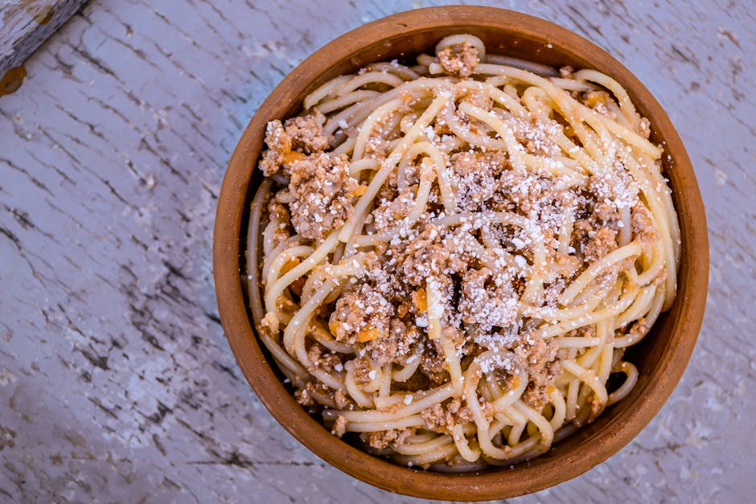

A hearty, old-world pasta built for cold nights after a long day in the field. Ground elk shoulder melts into a rich, deeply flavored sauce that rivals any beef version. The secret: a splash of red wine and a long, patient simmer.
2 lbs ground elk shoulder • 1 lb fresh pasta (or dried rigatoni) • 1 can crushed San Marzano tomatoes • 1 cup red wine (Cab or Merlot) • 1 large onion, diced • 4 cloves garlic • 2 carrots, finely diced • 2 celery stalks, finely diced • 2 tbsp tomato paste • 1 cup elk or beef stock • Fresh thyme, rosemary, bay leaf • Salt and black pepper • Parmesan for serving
Start with a heavy-bottomed Dutch oven over medium heat. Add a glug of olive oil and brown the elk shoulder in batches — don't crowd the pan or you'll steam instead of sear. Once you've built a deep brown crust on the meat, push it to the sides and add your diced onion, carrots, and celery. Cook until soft and fragrant, about 8 minutes. Add the garlic and tomato paste, stir for 2 minutes until the paste darkens slightly.
Deglaze with the red wine, scraping up all the browned bits from the bottom of the pot. Let the wine reduce by half — this takes about 5 minutes and the smell is unreal. Add the crushed tomatoes, stock, thyme, rosemary, and bay leaf. Stir everything together, bring to a gentle simmer, then partially cover and cook low and slow for 3 to 4 hours. The longer it cooks, the deeper and more complex the flavor becomes. Season generously with salt and black pepper throughout.
When you're ready to serve, cook your pasta in well-salted water until al dente. Reserve 1 cup of the pasta water before draining — this starchy liquid is your secret weapon for adjusting the sauce consistency. Pull the bay leaf and woody herb stems. Taste the sauce one more time — it should be rich, deeply savory, and just slightly sweet from the tomatoes. If it needs brightness, a small pinch of sugar will do.
Toss the pasta with the bolognese, adding splashes of pasta water until the sauce clings perfectly to every noodle. Plate up and finish with a generous snowfall of freshly grated Parmesan and a crack of black pepper. Serve with crusty bread and the same wine you cooked with.
Elk is lean — add 20% ground pork shoulder if you want more fat and flavor. Make this a day ahead; the flavors meld overnight and it's even better the next day. If your sauce is too acidic, a pinch of baking soda will neutralize it without changing the flavor.
🔥 Tag Soup — Wild Game & Outdoor Cooking
← Back to Tag Soup